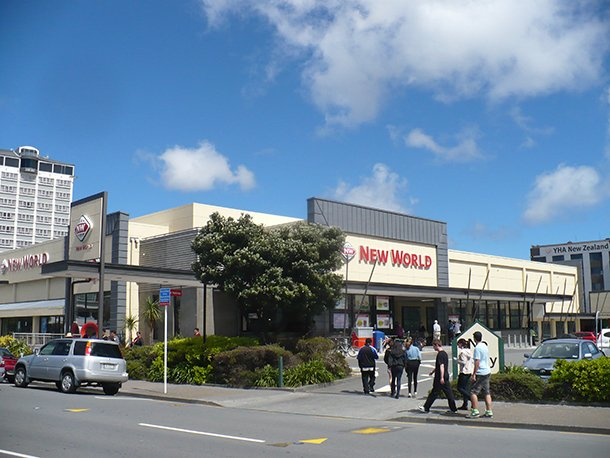

New World Wellington

New World Wellington City located in Te Aro is the largest supermarket in wellington city Food safety and storage can be guaranteed.
The air-dried jerky itself has an extremely long shelf life, and supermarkets have warehouses for storage